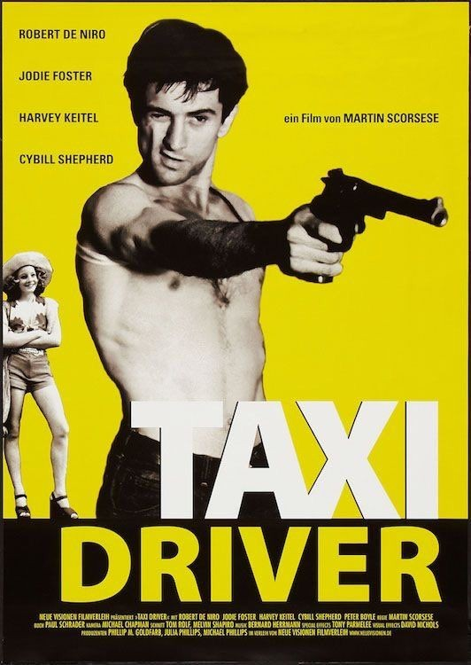
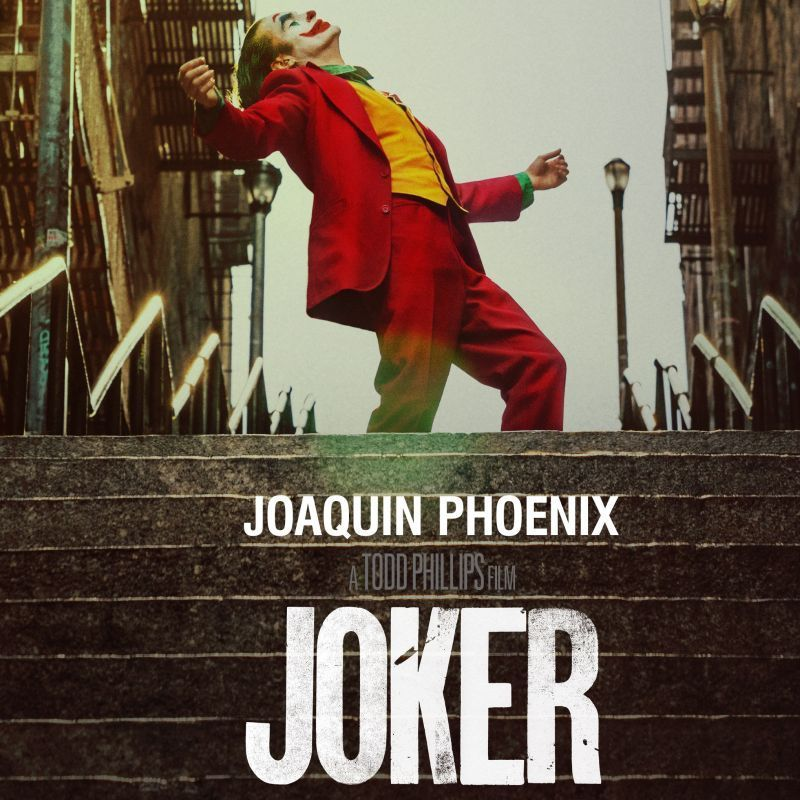
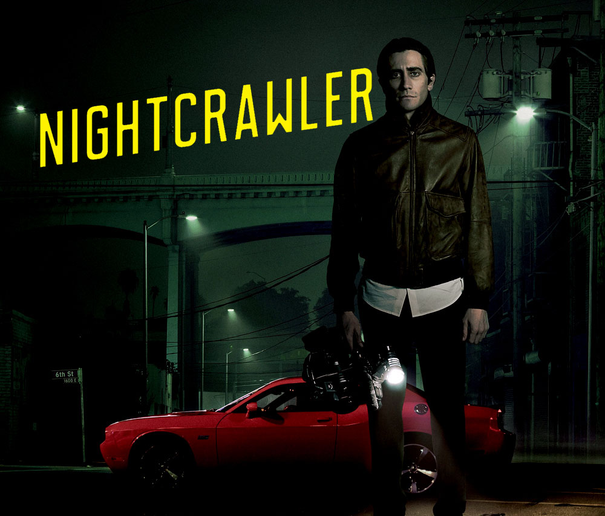
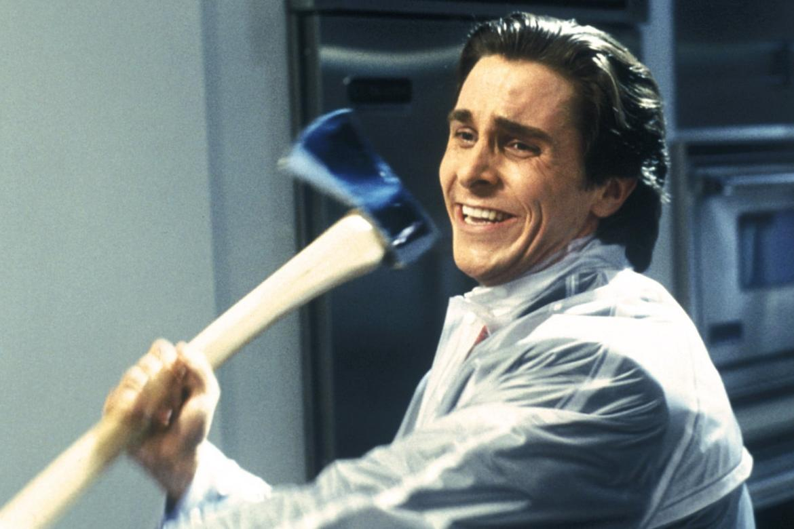
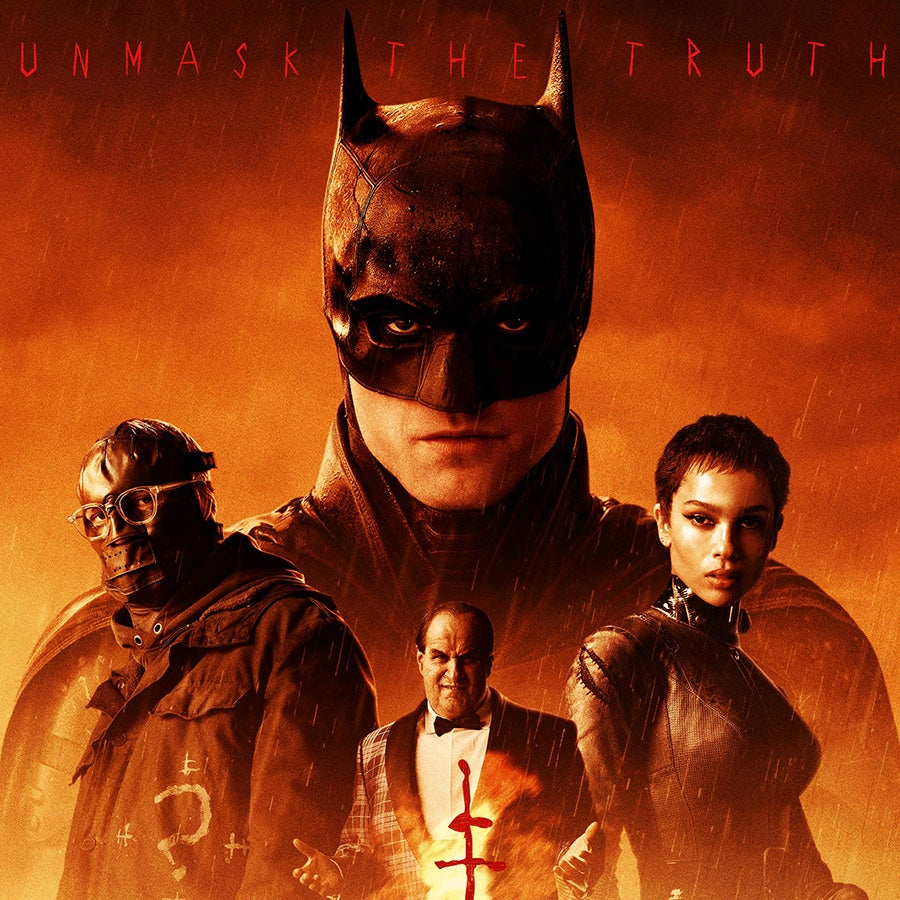
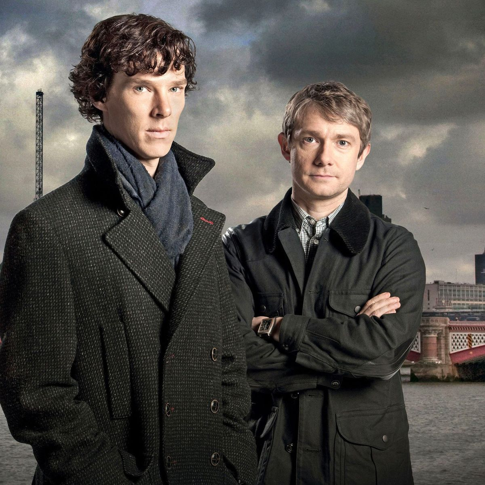
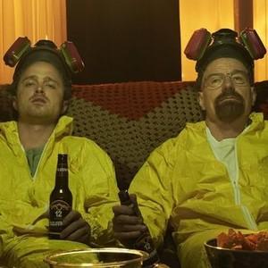
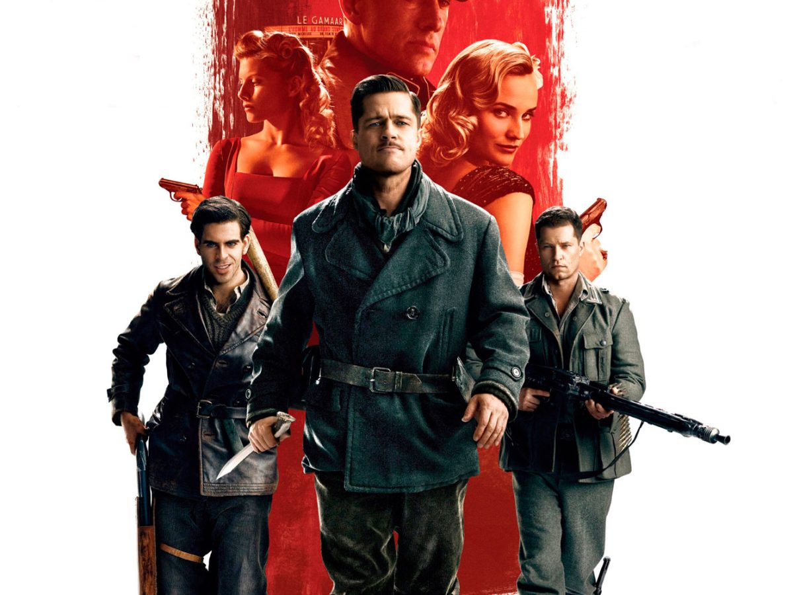
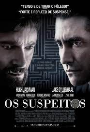

 O motorista de táxi de Nova York Travis Bickle, veterano da Guerra do Vietnã, reflete constantemente sobre a corrupção da vida ao seu redor e sente-se cada vez mais perturbado com a própria solidão e alienação. Apesar de não conseguir fazer contato emocional com ninguém e viver uma vida questionável em busca de diversão, ele se torna obcecado em ajudar uma prostituta de 12 anos que entra em seu táxi para fugir de um cafetão.
Blade Runner 2049
Após descobrir um segredo que ameaça o que resta da sociedade, um novo policial parte em busca de Rick Deckard, que está desaparecido há 30 anos.
Joker
 Isolado, intimidado e desconsiderado pela sociedade, o fracassado comediante Arthur Fleck inicia seu caminho como uma mente criminosa após assassinar três homens em pleno metrô. Sua ação inicia um movimento popular contra a elite de Gotham City, da qual Thomas Wayne é seu maior representante.
O Abutre
 Para enfrentar dificuldades de conseguir um emprego formal, o jovem Louis Bloom (Jake Gyllenhaal) decide entrar no agitado submundo do jornalismo criminal independente de Los Angeles. A fórmula é correr atrás de crimes e acidentes chocantes, registrar tudo e vender a história para veículos interessados.
Psicopata Americano
 Em Nova York, em 1987, o belo jovem profissional Patrick Bateman tem uma segunda vida como um horrível assassino em série durante a noite. O elenco é formado pelo detetive, a noiva, a amante, o colega de trabalho e a secretária. Esta é uma comédia de humor seco que examina os elementos que transformam um homem em um monstro.
Batman (2022)
 Após dois anos espreitando as ruas como Batman, Bruce Wayne se encontra nas profundezas mais sombrias de Gotham City. Com poucos aliados confiáveis, o vigilante solitário se estabelece como a personificação da vingança para a população.
Sherlock (BBC)
 Sherlock Holmes sempre foi um homem moderno, o mundo é que envelheceu. Agora ele está de volta como sempre foi: nervoso, contemporâneo, difícil e perigoso, apresentado de um jeito novo, moderno.
Breaking Bad
 O professor de química Walter White não acredita que sua vida possa piorar ainda mais. Quando descobre que tem câncer terminal, Walter decide arriscar tudo para ganhar dinheiro enquanto pode, transformando sua van em um laboratório de metanfetamina.
Bastardos Inglorios
 Um jovem cresce na máfia e trabalha arduamente para crescer entre seus companheiros. Ele gosta da vida de dinheiro e luxo, mas não liga para o horror que provoca. Infelizmente, a dependência de drogas e alguns erros finalmente destroem sua escalada até o topo. Baseado no livro Wiseguy por Nicholas Pileggi.
Os Suspeitos
 Depois que sua filha de seis anos e uma amiga dela são sequestradas, Keller Dove, um carpinteiro de Boston, enfrenta o departamento de polícia e o jovem detetive encarregado do caso para fazer justiça com as próprias mãos.